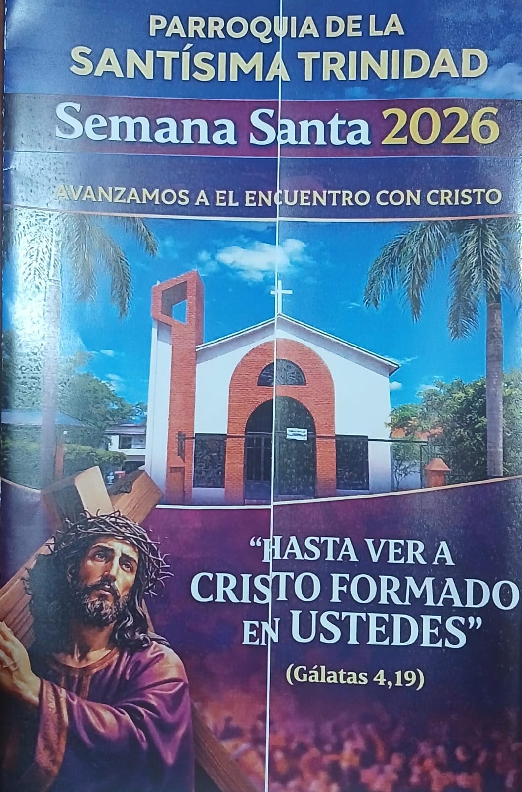
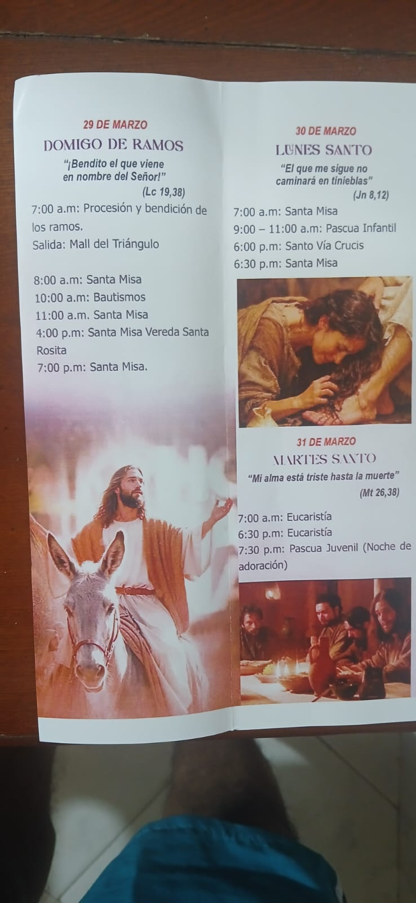
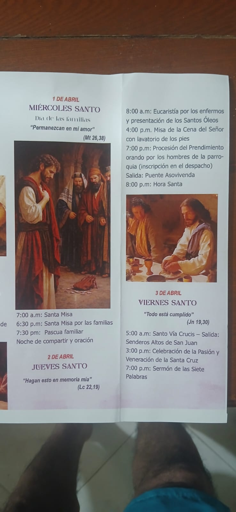
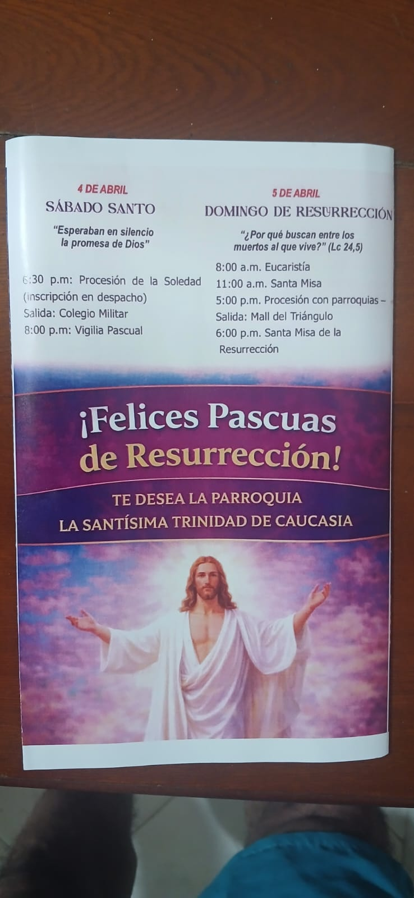
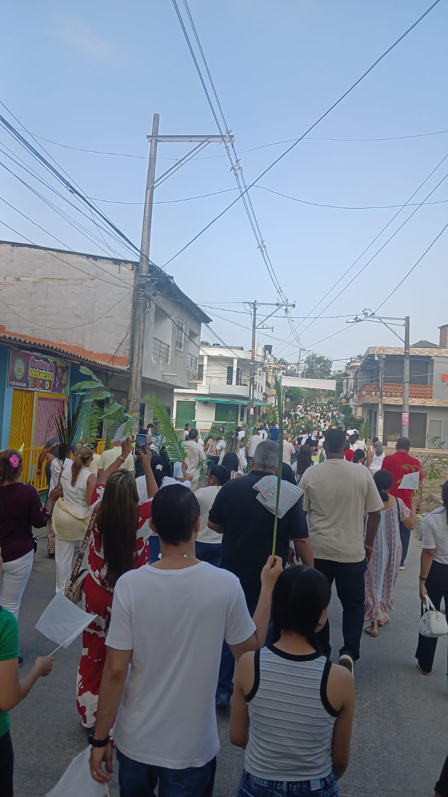
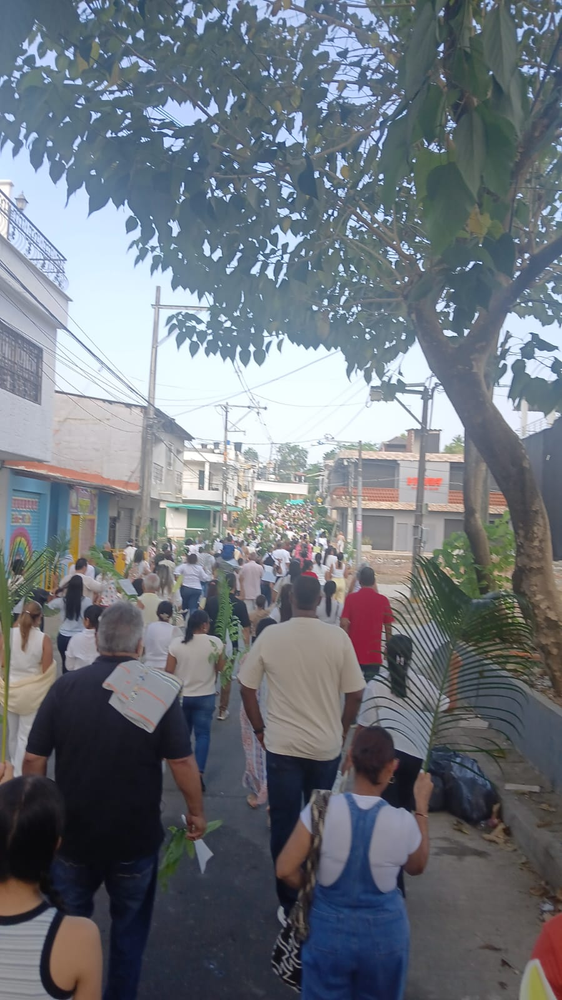

Cargando fecha...
PARROQUIA SANTÍSIMA TRINIDAD
BARRIO EL TRIÁNGULO - CAUCASIA
WhatsApp:
311 770 0431
Semana Santa 2026
📖 Programación de Semana Santa




🌿 Domingo de Ramos


📖 Palabra del Señor
Cargando Evangelio desde Vatican News...
Santo del Día
...
Ir a Vatican News